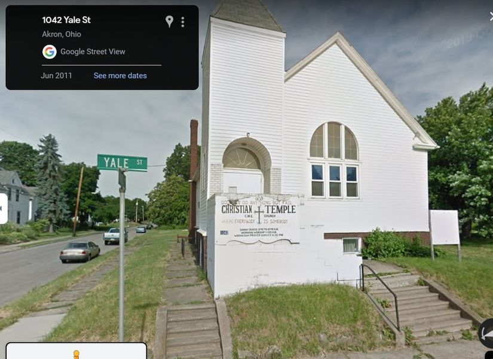

Timeline photos
Does anyone know anything about this church at 1042 Yale Street in Akron?
They haven't paid any taxes on the property since about 2012. It's owned by "CHRISTIAN TEMPLE CHRISTIAN METHODIST EPISCOPAL CHURCH OF AKRON"
All the windows are broken out and the doors are wide open.
For a possible next step in my life I'm considering starting to pay the taxes on it and trying to get the utilities turned on and using it for @[109672538495516:274:Church of the Nomadic Spirit]